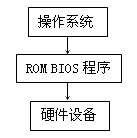
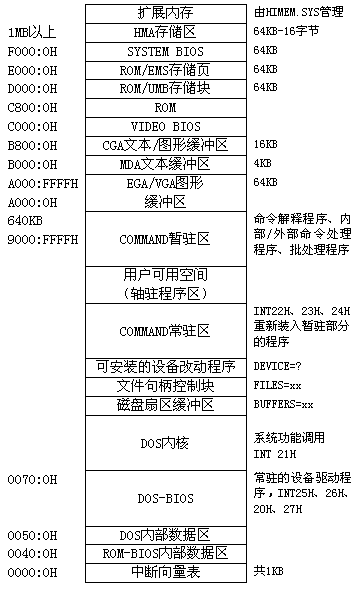

使用BIOS功能调用显示文字是一种十分简单的方法，这种方法具有两个优点：编程简单并且可移植性好。不同的机型其显示系统的结构可能不一样，但只要它们具有完全相同的BIOS功能调用，那么所有使用BIOS功能的程序在这些机型上都能正确地执行。这可以说是采用BIOS设计程序的最大优点。
不过采用BIOS功能调用编制程序也有一个缺陷，那就是效率低。这是因为BIOS程序执行前需要保存"环境"（要改变的寄存器），同时为了能在图形模式下显示出文字，还要做判断显示模式等工作，这使得程序运行速度不高。可见效率与可移植性是相矛盾的。

这里需要稍微说一点关于"可移植性"的问题，这个问题在第一章提过一点，大致是说汇编语言虽然效率高，但可移植性没有高级语言好。其实单就汇编语言自身而言，可移植性也分三个层次，原因很简单，我们的系统本身就分为三个层次。图6-4反映了PC系统的组成：
对于程序设计而言，硬件层包括存储器、寄存器和端口，它们和各种外部设备紧密相联，应用汇编语言控制它们就等于直接控制外部设备。我们在前面讨论过音响程序的设计，相信大家对61H端口的功能还有很深的印象。
在硬件层编程所具有的优势在于程序具有很高的效率和灵活性，这一点大家应该是很清楚的。通过编程控制定时器和61H端口，程序可以操纵PC电脑发出从音乐到枪声等很多不同的声音，甚至能发出语言。不过为了获得需要的声音效果，我们也必须深入地了解PC电脑的详细构造，要掌握端口每一位的作用以及一些电路的结构。而且程序要处理的事情也很多，比如为了发出音乐，则程序必须要精确地定时，且必须具体到几分音符对应几个时钟计数。这使得那些工作在硬件层的程序不易设计和调试。
为了解决这个问题，PC电脑的制造者特意在机器中安装了一片ROM存储器，里面有一组程序（习惯上称这组程序是"固化"的程序），这组程序就是通常所说的BIOS。这片ROM非常重要，没有这片ROM则电脑是根本不能启动的。更为重要的是这片ROM为程序设计者提供了一些最最常用的"子程序"，这些子程序可以完成诸如显示文字或读取磁盘等功能，程序员只要使用"INT"指令很简单地调用这些子程序完成一些较为复杂的工作。这一层次就是一般所说的"BIOS"层。
由于有现成的子程序可以调用，所以在这一层次上设计程序就很简单，而且程序容易移植到别的机型上，只要这些机型具有相同的中断号和功能号。这一层次的缺点在于程序要损失一些速度和灵活性。
第三个层次是由操作系统的设计者提供的，这就是前面所说的"DOS API"。不过这里有必要多说一点，DOS系统允许用户使用"DEVICE"命令调入一些"设备驱动程序"，这些驱动程序可以控制一些"非标准"设备（不能由BIOS控制的设备），比如CD-ROM。程序员可以通过调用这些驱动程序来操作这些设备，这也能算上是在DOS层编程。
这一层次具有最好的可移植性，同时也具有最低的效率和灵活性，举个例子，通过BIOS编程显示字符可以方便地控制字符的属性，而通过DOS编程就无法做到这一点。
既然我们可以在三个层次上设计程序，那么究竟在工作哪个层次上就有一些值得考虑的地方：需要效率和灵活性就要放弃可移植性，需要可移植性就要放弃效率和灵活性。究竟取谁舍谁，就要根据需要而定。
这一节将详细讨论如何设计程序通过控制"Video RAM"来达到控制字符显示的目的，也就是说这一节的程序是在硬件层上工作的。通过这一节的学习，我们将更深入地了解PC系统。具体内容包括系统内存的规划，显示内存与屏幕文字的对应关系等，这些知识有助于我们今后开发出更快速的程序。下面我们就来讨论第一个重要的内容：显示内存的地址。
讲到这里我们有必要详细了解一下PC系统的内存规划，我们知道8086/88 处理机可以配备1MB内存，那么这些内存究竟是如何安排的呢？是不是所有的内存都可以装入代码呢？情况并非如我们想象的那样简单。图6-5反映了PC系统内存的分配情况：
可以看到物理地址0A000H以下是运行程序的空间，我们在DOS的提示符下打入一个程序的名字，DOS就会将这个程序从磁盘读入这部分内存中运行。这部分空间从物理地址00000H至9FFFFH共640KB，一般称其为基本内存（Base Memory）或常规内存（Conversional Memory）。
从0A000至0FFFFFH共384KB内存空间有专门用途，最高端的64KB（即0F0000H－0FFFFFH）分配给SYSTEM BIOS占用，而从0A0000H－0BFFFFH共128KB的内存空间分配给显示系统使用，其余空间保留给其它的扩充卡或由EMS管理程序使用。我们所关心的"Video RAM"就在0A0000H－0BFFFFH这一段空间内。这一段空间又可细分为以下几个部分：
（1）EGA/VGA图形缓冲区：如果我们选择了EGA/VGA的图形模式，那么VRAM将出现在物理地址0A0000H－0AFFFFH这64KB空间中。
（2）MDA文本缓冲区：这部分空间从物理地址0B0000H至0B7FFFH共32KB，由早期的MDA卡使用，由于MDA卡上只有4KB内存，所以它只使用0B000H-0B1000H共4KB地址空间。需要注意的是HGC卡（Hercules Graphics Card）使用整个32KB空间作为其图形缓冲区，同时它又兼容MDA卡。
（3）CGA文本／图形缓冲区：物理地址0B8000H－0BFFFFH共32KB地址空间分配给CGA卡使用，CGA卡使用了前16KB，无论是在文本模式还是在图形模式，显示缓冲区的起始物理地址都是0B8000H，相应的逻辑地址是0B800:0000。在文本模式下向这一段内存中填入数据就会影响到屏幕上的显示结果，这一节我们所要讨论的也就是这一段内存。
有一个问题需要说明，如果使用一块EGA或VGA卡，那么选择了CGA的文本模式（模式号0－3）时，显示内存的地址分配和标准的CGA卡是完全一样的。因为EGA/VGA卡在显示内存地址分配上和CGA卡100%兼容。